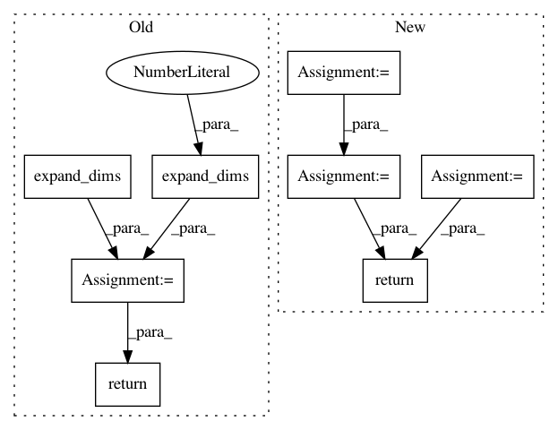

d1ac7b831ad36cd0e4bdd7980819f83208345148,gpflow/expectations.py,,_expectation,#Any#Any#Any#Any#Any#,92
Before Change
else:
lengthscales = tf.zeros((D,), dtype=settings.tf_float) + kern.lengthscales
vec = tf.expand_dims(Xmu, 2) - tf.expand_dims(tf.transpose(Z), 0) // NxDxM
chols = tf.cholesky(tf.expand_dims(tf.matrix_diag(lengthscales ** 2), 0) + Xcov)
Lvec = tf.matrix_triangular_solve(chols, vec)
q = tf.reduce_sum(Lvec ** 2, [1])
chol_diags = tf.matrix_diag_part(chols) // N x D
half_log_dets = (tf.reduce_sum(tf.log(chol_diags), 1)
- tf.reduce_sum(tf.log(lengthscales))) // N,
return kern.variance * tf.exp(-0.5 * q - tf.expand_dims(half_log_dets, 1))
@dispatch(Gaussian, kernels.RBF, InducingPoints, mean_functions.Identity, type(None))
def _expectation(p, rbf_kern, feat, identity_mean, none):
After Change
all_diffs = tf.transpose(Z) - tf.expand_dims(Xmu, 2) // NxDxM
exponent_mahalanobis = tf.matrix_triangular_solve(chol_L_plus_Xcov, all_diffs, lower=True) // NxDxM
exponent_mahalanobis = tf.reduce_sum(tf.square(exponent_mahalanobis), 1) // NxM
exponent_mahalanobis = tf.exp(-0.5 * exponent_mahalanobis) // NxM
sqrt_det_L = tf.reduce_prod(lengthscales)
sqrt_det_L_plus_Xcov = tf.exp(tf.reduce_sum(tf.log(tf.matrix_diag_part(chol_L_plus_Xcov)), axis=1))
determinants = sqrt_det_L / sqrt_det_L_plus_Xcov // N
return kern.variance * (determinants[:, None] * exponent_mahalanobis)
@dispatch(Gaussian, mean_functions.Identity, type(None), kernels.RBF, InducingPoints)
def _expectation(p, mean, none, kern, feat):
In pattern: SUPERPATTERN
Frequency: 4
Non-data size: 8
Instances
Project Name: GPflow/GPflow
Commit Name: d1ac7b831ad36cd0e4bdd7980819f83208345148
Time: 2018-02-07
Author: alex.ialongo@gmail.com
File Name: gpflow/expectations.py
Class Name:
Method Name: _expectation
Project Name: geomstats/geomstats
Commit Name: 656e5e7d6b75cf0a7fad757a7ca59174c66e85f0
Time: 2020-04-09
Author: gerald@pop-os.localdomain
File Name: geomstats/geometry/poincare_ball.py
Class Name: PoincareBallMetric
Method Name: inner_product_matrix
Project Name: GPflow/GPflow
Commit Name: d1ac7b831ad36cd0e4bdd7980819f83208345148
Time: 2018-02-07
Author: alex.ialongo@gmail.com
File Name: gpflow/expectations.py
Class Name:
Method Name: _expectation
Project Name: geomstats/geomstats
Commit Name: c8e7a4ff3fb3fbc14476876b6087a68c6d56ab45
Time: 2020-04-09
Author: gerald@pop-os.localdomain
File Name: geomstats/geometry/poincare_ball.py
Class Name: PoincareBallMetric
Method Name: inner_product_matrix